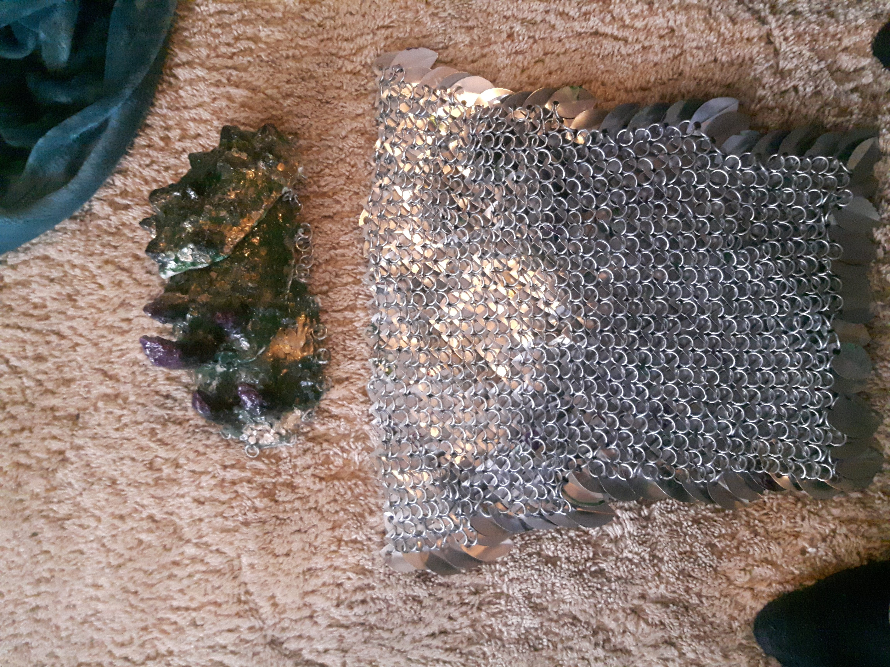
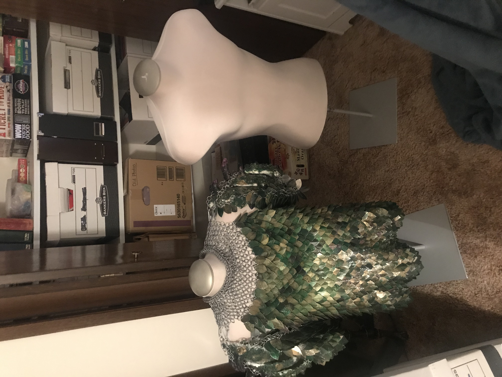

At the age of eight I was introduced to sculpting.

And I continued on in a couple of pottery classes till the age of 13. I wasnt necisarally the best in the class, but I did make a lot of containers, and I could make them big. Here are a few of my remaining works.
My biggest pride an joy is my scale mail vest. This project took over 300 hours to complete, and included me cutting out small scales out of plates of aluminum. Hole punching them, bending them, spray painting them, and weaving them together out of a spool of wire I found in the art room. I could be seen all throughout the second half of my Grade 12 year with the supplies for the costume, weaving in class, over lunch break, seminary, social events, everywhere.
I was able to submit my armor to a compitition where I won 100$ in a catigory that had never existed before.

Though its original purpose was to be a part of a costume, the rest of the costume of which took under 50 hours to make.

And of course when I found two maniquins for sale I bought them, the second maniquin is going to be for my next project.
I am looking forwards to being involved in projects like these again sometime. A hard part about being out of school is that I have to pay for everything I build. But I dont think anything you enjoy is waisted. I think for my next armored chestplate I'm going to go red and black.